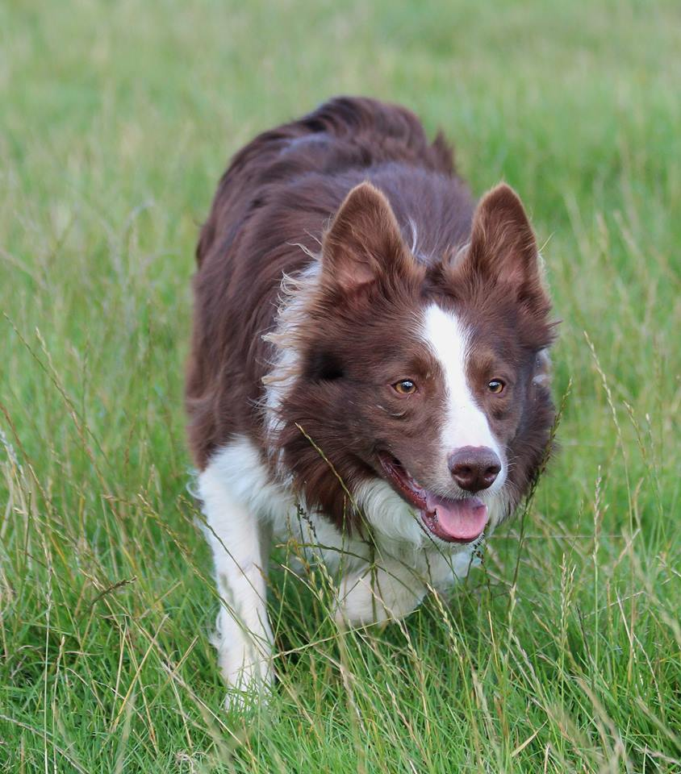

I colori del Border Collie
Lo standard del border collie prevede solo che "il bianco non deve predominare". A parte il bianco e nero, le colorazioni presenti sono tantissime, molte anche poco conosciute e a volte scambiate per altre razze.
Tipicamente il border collie viene visto in 3 colorazioni principali:
Il bianco e nero
È il più conosciuto e il più noto, grazie a vari film e pubblicità che hanno reso famosi i protagonisti, portando alla ribalta una razza prima quasi sconosciuta.Il mantello nero è cosi perchè i granuli di pigmento presenti nei peli sono molto grossi e addensati, tanto che vengono chiamati granuli di eumelanina , perché rappresentano una variante della normale melanina.
Il gene che regola la comparsa dell’eumelanina è dominante, e viene riconosciuto come B e infatti i cani neri sono la maggioranza.
L’allele recessivo, il b, quando si manifesta determina una variazione dandone un’ulteriore variante, la feomelanina, che dà il colore rosso.
La classica mascherina nera con lista bianca sulla fronte e il collare bianco, sono spesso ricercati per i ring di esposizione, ma non bisogna fare l’errore di pensare che un border “non è di razza pura se non è cosi”.
Per quanto riguarda la presenza di un occhio azzurro, questo è accettato a livello espositivo solo nei blu merle, nei cani bianchi e neri è considerato un difetto.. ma non inficia assolutamente la vista del cane, che potrà essere un fantastico cane per fare obedience, agility, sheepdog, o qualsiasi altra cosa!
Il bianco e rosso
 La colorazione bianca e rossa a volte viene definita anche come cioccolato o marrone, generando un po’ di confusione; questo succede perché le gradazioni di colore del mantello possono essere diverse.Il bianco e rosso resta comunque uno dei colori forse più conosciuti dopo il classico bianco e nero.
Il rosso nella genetica dei border collie è un colore recessivo, che per potersi esprimere nel mantello del cane dev’essere presente con una coppia di geni uguali per quel carattere. Per semplificare le cose, il colore rosso viene generalmente indicato, in termini di corredo genetico come “b” quindi la coppia di geni che regolano il mantello di un cane rosso sarà “bb”.
Il colore nero invece è dominante (per le leggi della genetica viene indicato come “B” con la maiuscola!), quindi se c’è lui maschera il rosso che rimane comunque recessivo nel corredo genetico
Un cane nero geneticamente potrà essere un omozigote (BB) o un eterozigote (Bb), e sarà comunque nero. Ma in quest’ultimo caso (Bb), se accoppiato con un soggetto portatore anch’esso di una “b” potrà dare dei cuccioli rossi!
Secondo lo standard, nei border bianchi e rossi naso e occhi devono essere pigmentati in tinta col mantello; generalmente le tonalità più scure sono più apprezzate sui ring. Non bisogna poi confondere il rosso con il rosso australiano, un bellissimo colore dorato, poco diffuso in Italia ma molto più conosciuto negli altri paesi.
Il merle
Il gene Merle che porta alla formazione del tipico mantello negli individui è un gene a dominanza incompleta. Questo vuol dire che il gene è dominante, quindi si esprime sempre se c’è, e lo fa in modo “parziale” cioè agisce sul colore di base provocando una diluizione del colore del mantello, dando origine alla tipica “pezzatura” visibile nei mantelli merle.Secondo lo standard i border collie col mantello merle sono gli unici che possono avere uno o entrambi gli occhi azzurri, in parte o completamente.
Il tartufo dev’essere pigmentato completamente, in “tinta” con il colore del mantello (quindi nero nei blu merle, e color “fegato” nei red merle).
Il gene Merle è un gene dominante, per cui se il cucciolo è merle, almeno uno dei genitori deve esserlo per forza: non possono nascere cuccioli merle da due genitori di altri colori.
Nel momento in cui si sceglie di prendere un cane merle bisogna prestare molta attenzione ad un’eventuale accoppiamento ; infatti, l’incrocio di due soggetti merle fra di loro è DA EVITARE perché può causare gravi conseguenze per la salute dei cuccioli, che potranno avere gravi problemi di vista e udito, fino alle estreme conseguenze, con cuccioli affetti da sordità e cecità. Quindi un soggetto merle andrà SEMPRE accoppiato con un soggetto non merle!
Per saperne di più clicca qui
Altre colorazioni
Le colorazioni diverse da quelle classcihe sono moltissime, anche grazie alle combinazioni del tricolor/gene merle;troviamo infatti:
- blue
- blue tricolore
- blue merle
- blue merle tricolore
- lilac
- lilac tricolore
- lilac merle
- lilac merle tricolore
- sable
- sable tricolore
- sable merle
- sable merle tricolore
- black saddleback tricolour
- seal
- seal tricolore
- seal merle
- seal merle tricolore
- chocolate
- chocolate tricolore
- chocolate merle
- chocolate merle tricolore
- rosso
- rosso tricolore
- red merle
- australian red
- mottled